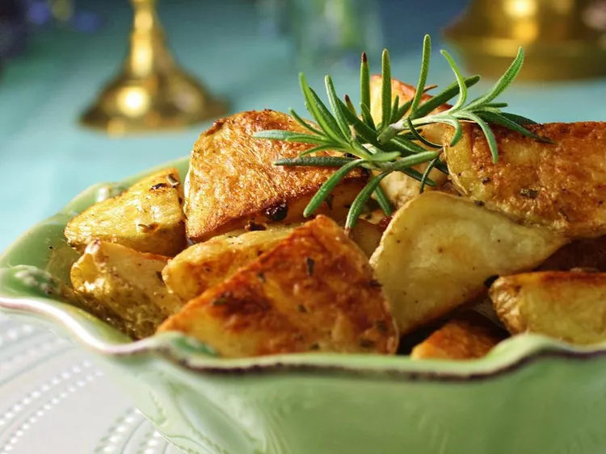

Amazing Oven-Roasted Potatoes

Description
These oven-roasted potatoes are golden on the outside and tender on the inside. Made with minimum oil for a less greasy option than regular fried potatoes!
Ingredients
- 6 medium potatoes, cut into chunks
- 2 tablespoons olive oil
- ½ teaspoon seasoned salt, or to taste
- ½ teaspoon salt, or to taste
- 1 teaspoon cracked black pepper
Steps
- Preheat the oven to 400 degrees F (200 degrees C). Line a baking sheet with aluminum foil.
- Rinse potatoes and dry with a paper towel.
- Place potatoes into a large bowl with oil, seasoned salt, salt, and pepper; mix until well coated. Pour onto the prepared baking sheet and spread into an even layer.
- Bake in the preheated oven, turning occasionally, until potatoes are tender and golden brown, about 1 hour.